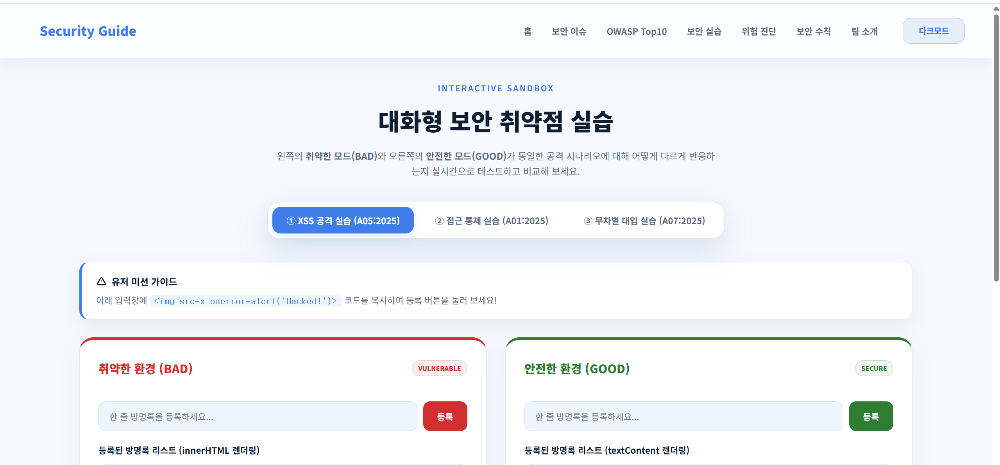
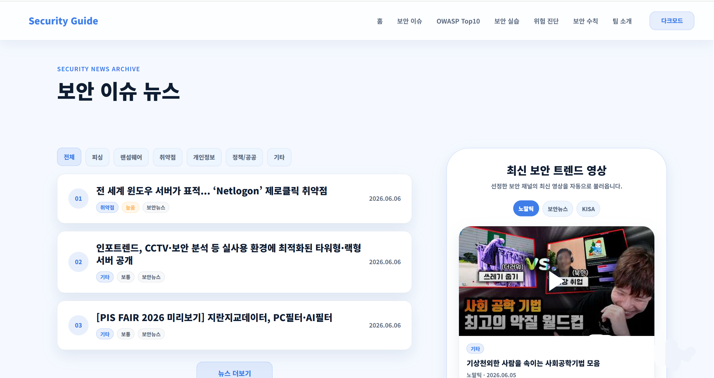
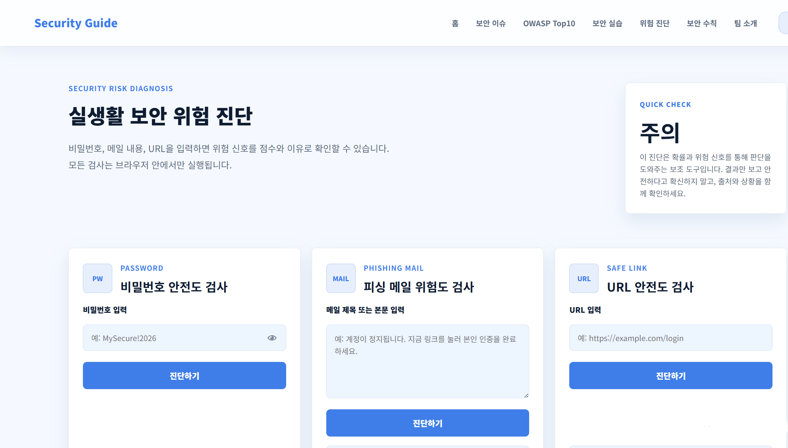
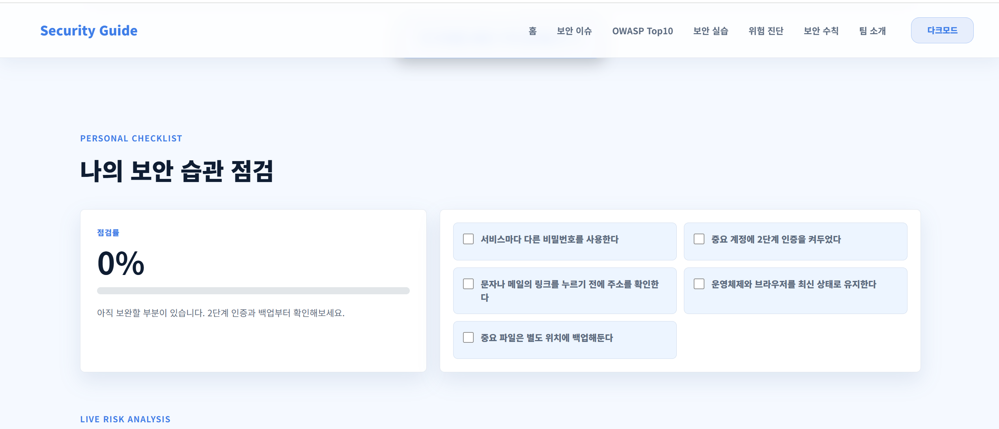

박형진
팀장 / 보안 실습
- 취약 코드와 보안 조치 코드 비교 구현
- OWASP A05 XSS 및 A01 접근 통제 실습 구현
- OWASP A07 무차별 대입 실습 구현
Home > Team
중간 프로젝트와 기말 프로젝트를 함께 정리한 페이지입니다.
기말에는 Security Guide를 보안 학습 플랫폼으로 확장했습니다.
팀 프로젝트 추가하기
중간 프로젝트의 보안 안내 웹사이트를 확장하여 보안 이슈 뉴스, OWASP 취약점 실습, 실생활 보안 위험 진단, 보안 퀴즈와 보안 습관 체크리스트를 추가한 기말 팀 프로젝트입니다.

사용자가 최신 보안 이슈를 확인하고, 취약한 코드와 안전한 코드를 직접 비교하며 실생활 보안 습관까지 점검할 수 있도록 만드는 것이 목표입니다.
보안 뉴스, OWASP A05/A01/A07 실습, 비밀번호·피싱 메일·URL 위험 진단, 보안 퀴즈, 개인 보안 체크리스트, 팀 소개 페이지로 구성했습니다.
정보 안내 중심의 중간 결과물을 사용자가 직접 테스트하고 점검할 수 있는 인터랙티브 보안 학습 플랫폼으로 확장했습니다.
팀장과 팀원들이 맡은 페이지와 구현 내용을 정리했습니다.
팀장 / 보안 실습
위험 진단 / 담당 페이지 JS
보안 수칙 / 보안 퀴즈
보안 이슈 / 트렌드
중간 프로젝트에서 만든 기본 보안 안내 페이지를 바탕으로 각자 담당 기능을 확장했습니다. 이후 공통 디자인, 다크 모드, 페이지 연결, 반응형 화면을 함께 점검하며 기말 결과물로 통합했습니다.
팀 프로젝트를 진행하며 제작한 화면과 작업 과정을 정리했습니다.


